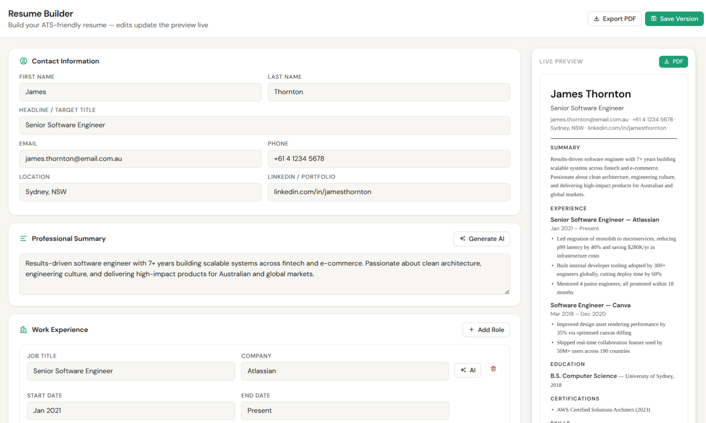
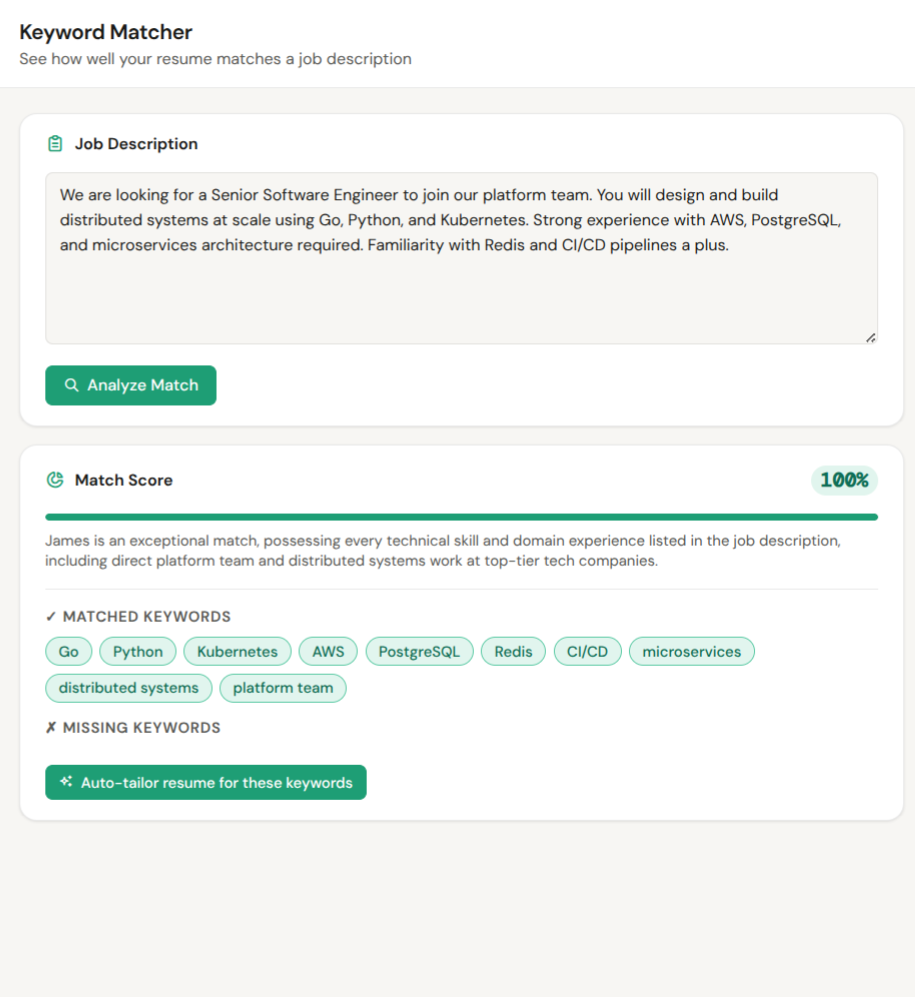
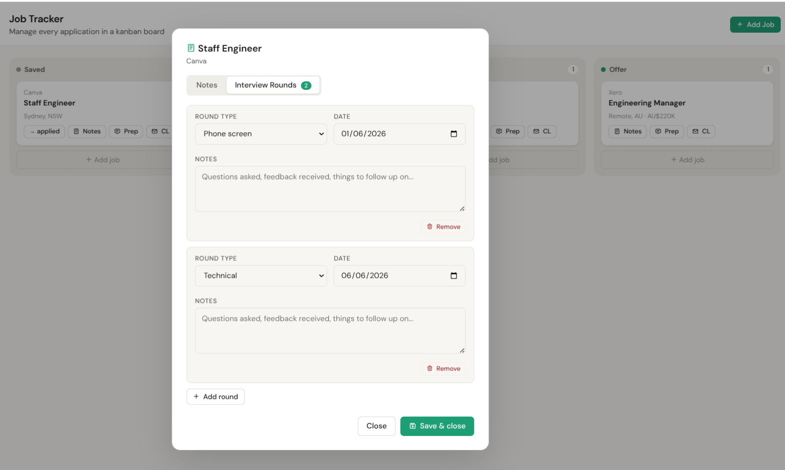
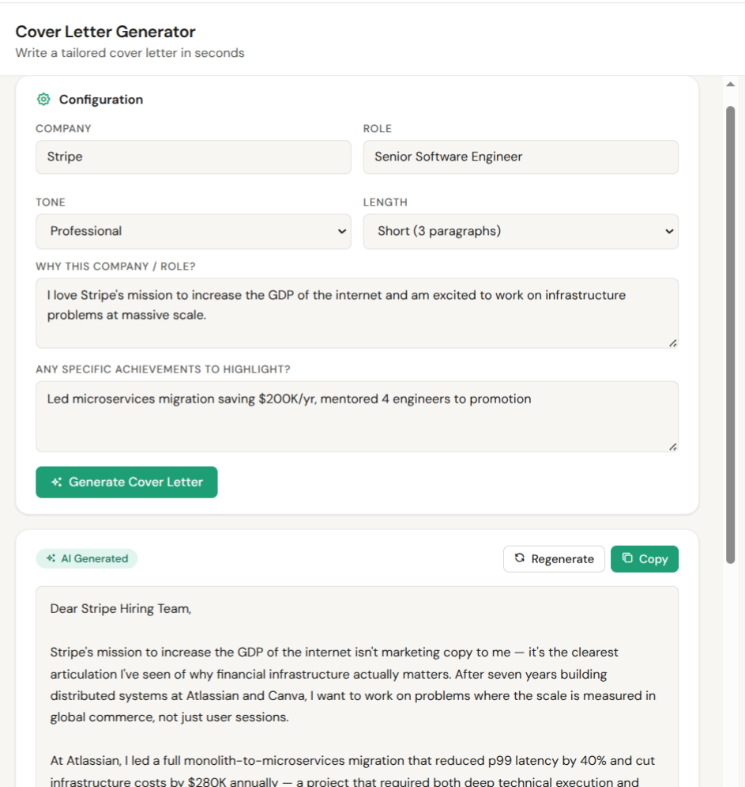
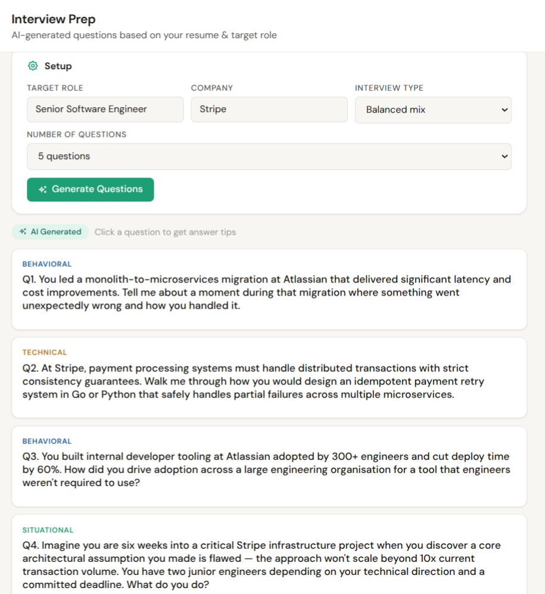

I didn't build this to have a side project. I built it to develop engineering judgment you can only get by shipping something real - from architecture decisions and platform tradeoffs to auth, persistence, testing, and deployment.
Interested in a live walkthrough? Reach out and I'll share access directly.
Eight features shipped. Click through to request a live walkthrough.





Every architecture decision has a tradeoff. These are the ones that mattered most on this project.
Separation of concerns across three independent layers, with the frontend never holding secrets or talking directly to external APIs.
From a live resume editor with PDF export to a kanban job tracker - all persisted per user, all powered by Claude.
"The engineering work on this project was straightforward. The judgment work was harder. When to prototype vs architect. When to fix vs ship. When the simple platform is the right call and when it creates problems later. These are the decisions that determine whether an engineering team builds the right thing well or the wrong thing fast."
"AI integration changes the product development loop in a specific way: Claude can generate a working feature in seconds, which means the bottleneck shifts from writing code to knowing what to build, how to structure prompts, how to handle streaming and structured output reliably, and how to test AI-dependent behaviour without making tests brittle or expensive. None of that is obvious until you've done it."
"The cross-origin auth problem is a good example of the kind of issue that appears late, looks like a browser quirk, and has an easy workaround that accumulates technical debt. I've seen this pattern at every company I've worked at - the workaround gets shipped, documented, and forgotten, and six months later nobody knows why users on certain browsers can't log in. The right call is almost always to fix it properly, even when the deadline argues otherwise."